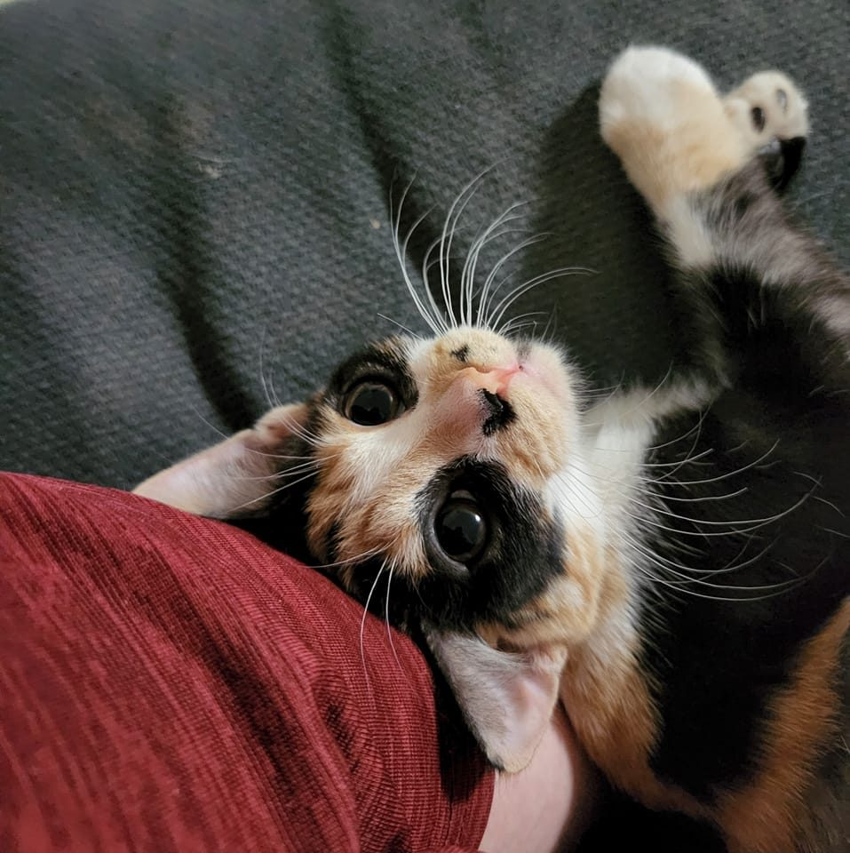

Austin Walker
Web Development Resume
Summary
My name is Austin Walker, I am a web developer, and this is my resume.
On this website, I will provide you with my education history, work experience
and skills I believe relevant for web development positions. In addition, I will
also be providing a couple of my hobbies and my contact information.
Education History
- Completion of Year 10 at Kooringal High School.
- Completion of Year 11 and Year 12 equivalents at TAFE NSW
- Bachelors Degree in Information Technology at Charles Sturt University
Work Experience
- No current work experience
Skills and Expertise
- Proficient in Microsoft suite (Word, Excel, etc.)
- Proficient in Adobe suite (Photoshop, illustrator, etc.)
- Proficient in Python, HTML, CSS, Javascript
Hobbies
Contact Me